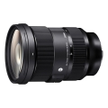

这是适马推出的第二款专为无反相机设计的“Art Zoom”镜头，拥有颠覆性的光学性能和恒定大光圈标准变焦的镜头，可在整个变焦范围内提供高分辨率画质。该镜头采用多种特殊低色散玻璃镜片材料，在充分利用无反镜片的光学设计优点同时，大量使用了6片萤石级低色散（FLD）镜片和两片特殊低色散（SLD）镜片，同时使用三片非球面镜，用于最大限度消除像差，例如轴向像差或弧矢彗差等（这些像差在后期处理中很难被校正），以及优化调整分辨率，并在整个变焦范围中实现从中心到边缘的均匀性和出色的光学性能。除了超级多层镀膜之外，该产品还采用了纳米多孔镀膜（NPC）。这一镀膜设计可使其不受到眩光等强烈入射光的影响。